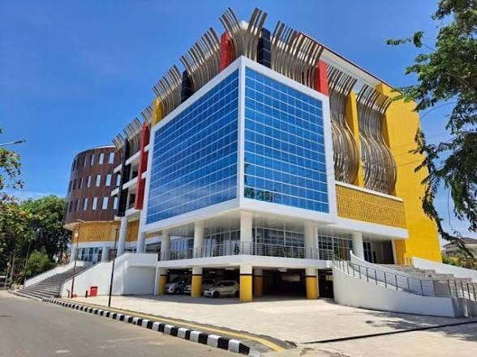

Tentang Kami
UPT Perpustakaan Universitas Negeri Padang (UNP) merupakan fasilitas informasi dan sumber belajar yang mendukung kegiatan akademik mahasiswa, dosen, dan sivitas akademika.
Perpustakaan menyediakan berbagai koleksi bahan pustaka dan fasilitas pendukung, seperti ruang baca, akses internet, serta sumber informasi untuk menunjang pembelajaran dan penelitian.

Katalog Perpustakaan
Temukan koleksi buku dan sumber informasi untuk mendukung kegiatan belajar dan penelitian.
Layanan dan Fasilitas
- Layanan sirkulasi dan peminjaman buku
- Layanan referensi dan penelusuran informasi
- Ruang baca untuk mahasiswa
- Fasilitas komputer dan akses internet
- Akses koleksi digital dan sumber informasi akademik
Jam Layanan
Untuk informasi mengenai jadwal operasional, silakan periksa pengumuman resmi UPT Perpustakaan UNP.
Kontak Kami
Untuk informasi lebih lanjut mengenai koleksi, layanan, dan fasilitas perpustakaan, silakan kunjungi situs resmi Universitas Negeri Padang.